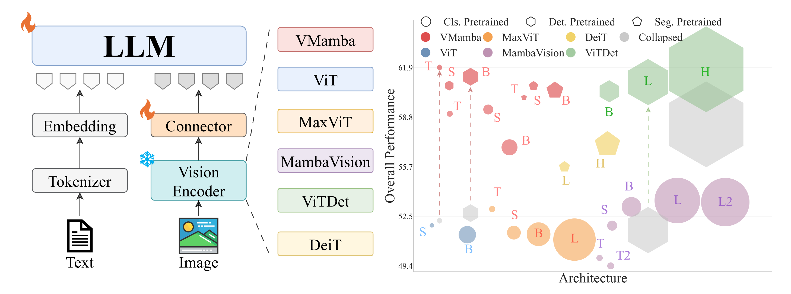
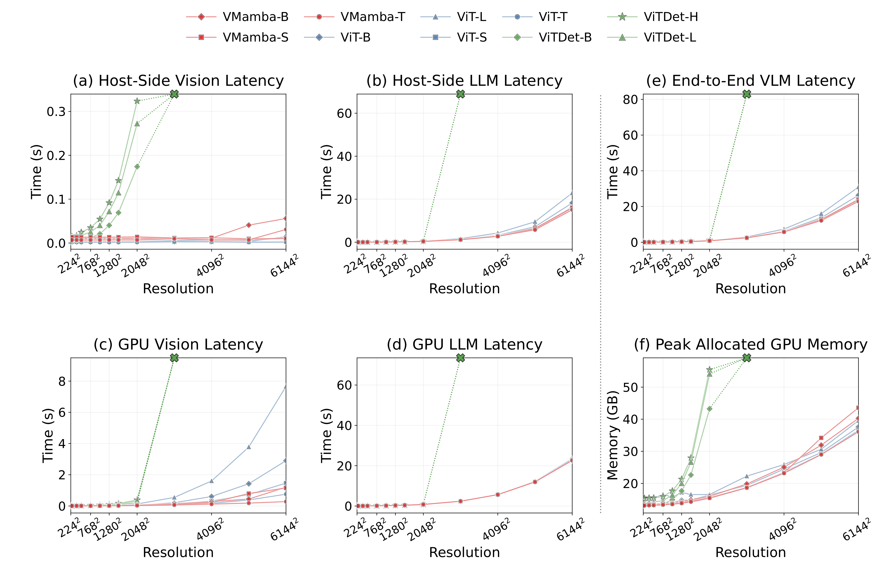

01
SSM backbones are strong VLM encoders
Under matched settings, VMamba improves localization while staying competitive on open-ended VQA, making SSMs a practical alternative to ViTs.
A controlled study of Transformer, state space, and hybrid vision backbones for frozen vision-language models.
Abstract
Large vision-language models usually freeze a vision backbone and map its image features into an LLM through a lightweight connector. Most systems still rely on transformer-based vision encoders. This work asks whether state space model backbones can be a strong alternative in the same modular VLM setting.
Under matched ImageNet-1K initialization, the SSM backbone delivers the strongest overall balance across VQA and grounding/localization. After dense-task adaptation, SSM backbones remain competitive while operating at substantially smaller scale. The study also shows that higher ImageNet accuracy or larger backbones do not reliably predict better downstream VLM behavior, and that simple stabilizations can recover localization failures.
Scope
The vision encoder is swapped while the multimodal interface and training recipe are held fixed, making the comparison about the backbone itself rather than about joint finetuning dynamics.
Findings
01
Under matched settings, VMamba improves localization while staying competitive on open-ended VQA, making SSMs a practical alternative to ViTs.
02
Detection or segmentation pretraining generally improves VQA and localization, with the largest gains appearing in backbones that need more spatial inductive bias.
03
Better classification scores and naive scaling do not consistently predict stronger downstream VLM behavior, especially for grounding-sensitive tasks.
04
Some dense-objective checkpoints fail sharply in localization, but simple interface and connector adjustments recover much more robust behavior.
Selected Figures
Fig. 1

Fig. 2

Fig. 4

Paper